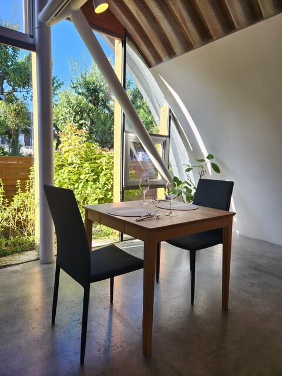
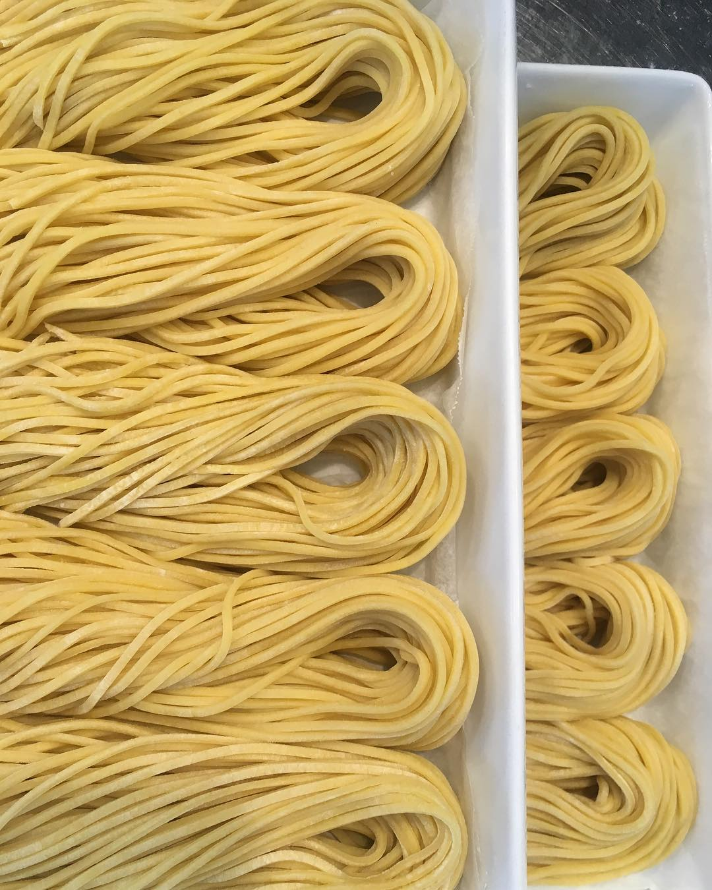
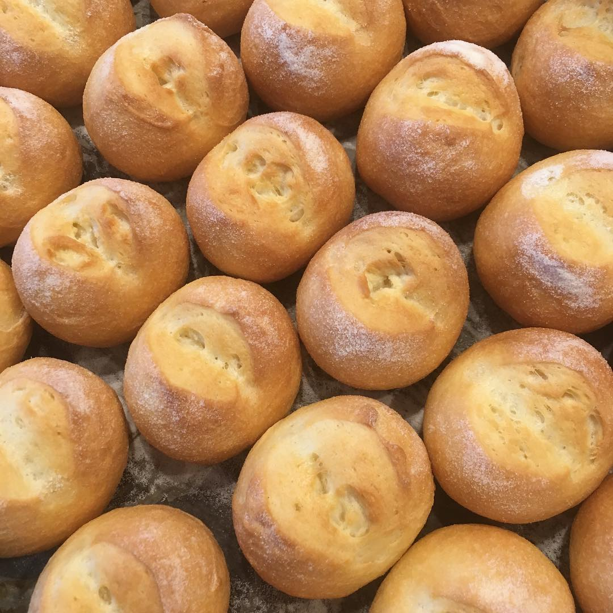
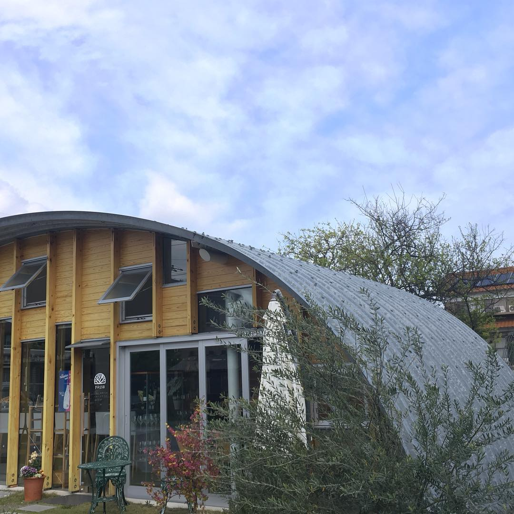
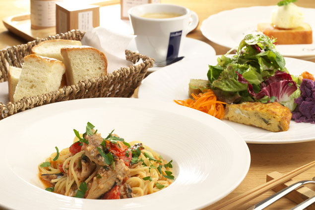
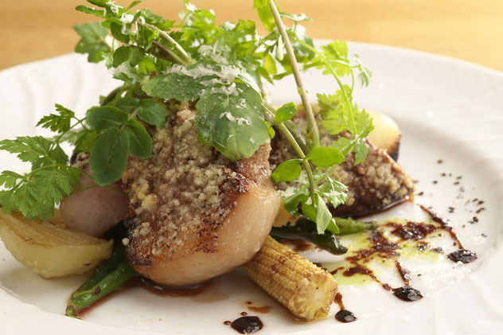
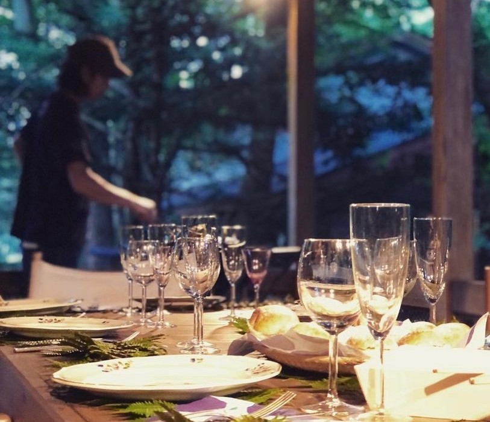
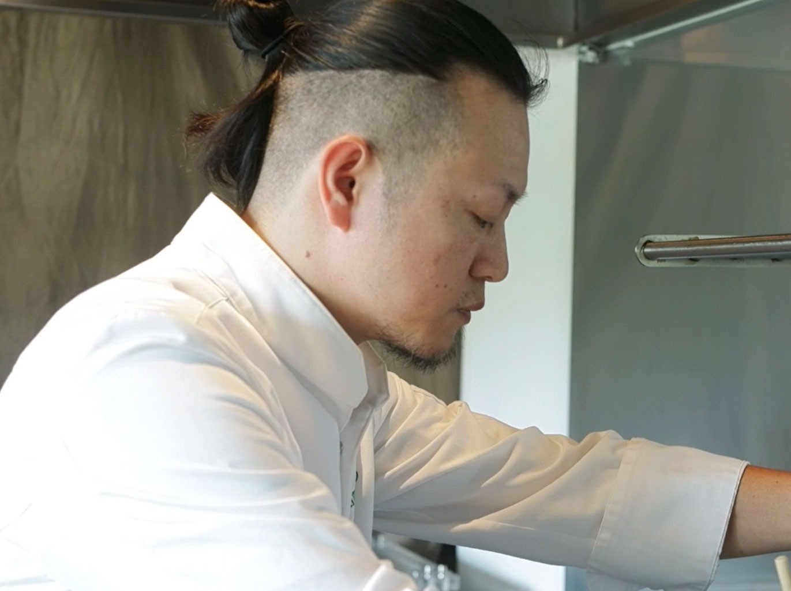

湖北の自然を、一皿に
滋賀県長浜市にある PASSO は、湖北の自然や風土に寄り添った料理をご提供する自然派イタリアンレストランです。
地元で採れる無農薬・減農薬野菜、湖魚、ジビエなど、その土地ならではの旬食材を活かしながら、素材本来の美味しさを丁寧に引き出しています。
シンプルでありながら、心に残る一皿。
静かな空間の中で、ゆっくりと食事と時間を楽しんでいただけるお店です。
PASSOのこだわり



手打ちパスタ
その日の分だけ、丁寧に仕込む
PASSOのパスタは、営業前にその日の分だけを丁寧に仕込む手打ちパスタ。
小麦の香りと卵のコクが引き立つ生地は、噛むほどに旨みが広がります。
ソースとの一体感まで考え、一皿ごとに深い味わいをお楽しみいただけるよう仕上げています。
自家製イタリアパン
料理に寄り添う、焼きたての香り
チャバタやフォカッチャなどのイタリアパンを、毎朝店内で焼き上げています。
なかでも小麦の香りが豊かに広がるチャバタは、料理との相性も抜群。
食卓に添えるパンにも、手間と想いを込めてご提供しています。
建築家が手がけた特別な空間
食と建築が調和する、静かなひととき
店内は、建築家・遠藤秀平氏による設計。
コルゲート鋼板を使用した印象的なアーチ状の空間は、無骨な素材でありながら、自然と調和するやわらかな雰囲いを生み出しています。
料理を味わうだけでなく、空間そのものも楽しめる場所として、心に残る時間をお届けします。
PASSOのおもてなし

湖北の旬を味わう
コース料理
季節ごとに変わる地元食材を使用したおまかせコースをご提供。湖魚やジビエ、滋賀野菜など、その時期だけの味わいをお楽しみいただけます。

自然派食材に
こだわった一皿
無農薬・減農薬野菜や伝統製法の調味料など、素材選びにもこだわり。身体にやさしく、素材の力を感じられる料理を大切にしています。

ワインとともに楽しむ
上質な時間
料理との相性を考えたワインも豊富にご用意。落ち着いた空間の中で、ゆっくりと料理とワインを楽しめる大人の時間をご提供しています。
PASSOの想いを、日常へ
LOKAは, PASSOから生まれたライフスタイルブランドです。
百草茶やローケーキ、店内で提供しているパンなど、
素材にこだわった商品を展開しています。
余計なものを削ぎ落とし、本当に必要なものを丁寧に選ぶ。
PASSOの世界観を、ご自宅でもお楽しみいただけます。
お客様の声
押谷シェフの料理への向き合い方、地元食材への愛情が形作るガストロノミー。
東京にあったら毎月通うが、長浜だからこそこの質が出せる、食べる側のリテラシーに応じて体験価値が変わる、そんなお店。
予約してランチのおまかせコースをいただきました。最初の伊吹百草茶から最後の無花果のデザートまでジビエ料理も含め、全ての品が丁寧に調理〜盛り付けられており、満足した一時を過ごさせていただきました。機会があれば再訪したい。
東京にあったら間違いなく通っている大好きなお店。
地元の美味しい食材と向き合い丁寧に作られたお料理がいただけるお店。
味付けも繊細だからこそ素材の美味しさを楽しむことができます。
またシェフのワインのセンスも大好き。
2019年GWの営業をもってレストランの営業は一旦お休みに。
活躍の場を広げられるということなので楽しみにしています。

旬の恵みを、一皿に込めて
私が大切にしているのは、素材に素真に向き合い、丁寧に料理をすることです。その時々の旬を活かし、シンプルでありながら心に残る一皿を目指しています。
地元の生産者さんとのご縁から出会う、四季折々の食材。その恵みと想いを一皿に込めて、お客様にお届けいたします。
PASSOで過ごす時間が、ほっとひと息つけるひとときになりますように。どうぞ、ゆったりとお食事をお楽しみください。
店舗情報・アクセス
店舗名
PASSO（パッソ）
住所
〒526-0031
滋賀県長浜市八幡東町291
電話番号
営業時間
昼 12:00 ～ 15:30（料理13:30）
夜 18:00 ～ 22:00（料理20:00）
定休日
水曜日